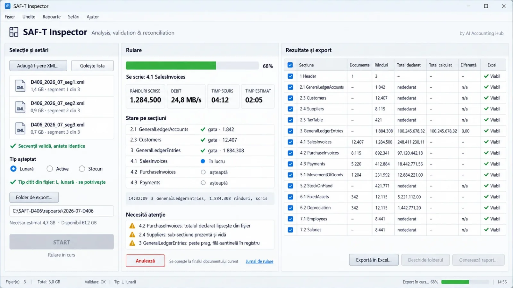
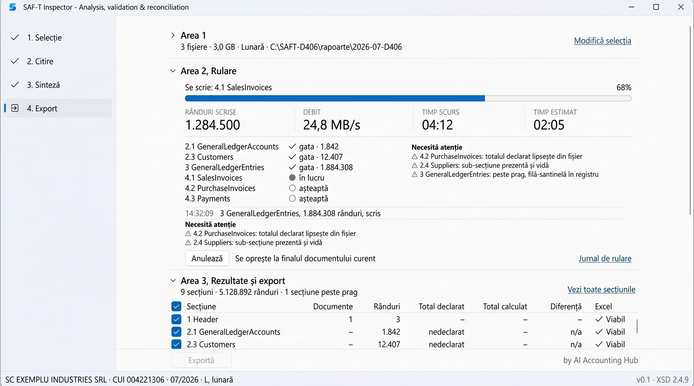
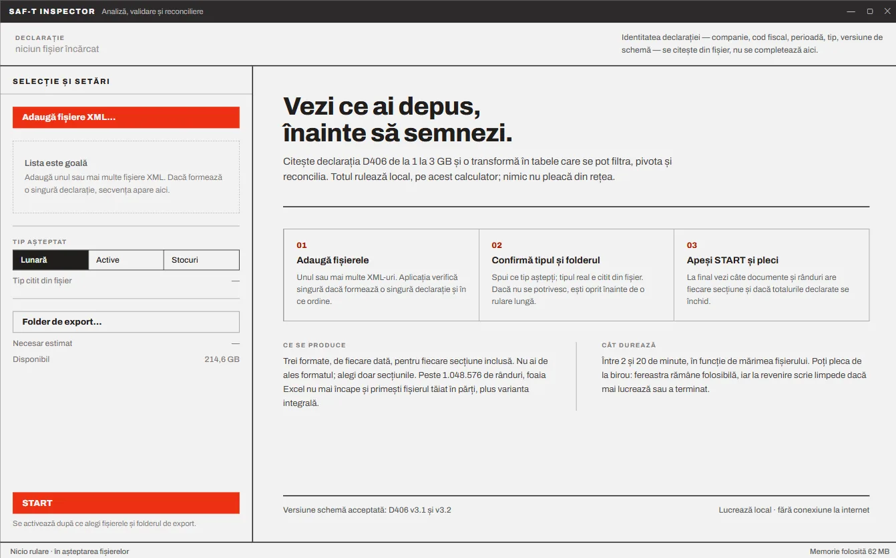

Ultimul pas înainte de cod
Între decizia tehnică și prima linie de cod mai e o etapă pe care aproape toată lumea o sare. Aplicația a primit un nume, i-am desenat fereastra în trei unelte diferite și abia apoi am scris specificația. Cu articolul acesta se încheie pregătirea; de săptămâna viitoare se scrie cod.
Seria SAF-Tpartea a șaptea ce a fost înainte
- Două aplicații ANAF pentru SAF-T: pași corecți, dar timizi27 august 2026 · 12 min
- Cinci ani de SAF-T în România: de la standardul OCDE la declarația D40629 august 2026 · 17 min
- Cum verifici fișierul SAF-T D406 înainte de depunere30 august 2026 · 22 min
- Nu cere drumul cel mai scurt5 septembrie 2026 · 12 min
- Proiectul care ține minte5 septembrie 2026 · 12 min
- Conversația care nu a produs cod8 septembrie 2026 · 13 min
// Cuprins
Articolul trecut s-a încheiat cu patru decizii de temelie și cu promisiunea că urmează codul. Nu urmează încă. Între raportul de decizii și prima linie de Python mai încap trei lucruri, pe care le-am făcut în ultimele zile și pe care aproape toată lumea le sare: aplicația a primit un nume, i-am desenat fereastra, și abia apoi am scris specificația tehnică.
Etapa aceasta nu produce nimic care să ruleze. Produce, în schimb, singurul lucru care face ca o conversație de implementare să nu reia de fiecare dată deciziile deja luate: PRD-ul tehnic.
Acronimul vine din engleză, Product Requirements Document, adică documentul cerințelor de produs. E practica veche a echipelor de software de a scrie, înainte de cod, ce trebuie să facă aplicația, pentru cine, ce primește și ce livrează, ce face când datele sunt greșite, ce nu face deloc și după ce se recunoaște că a ieșit bine. Când construiești cu un asistent AI, rolul lui crește: e memoria comună a proiectului. Fiecare conversație nouă pornește de la el, nu de la zero, iar tu ai un criteriu scris față de care judeci ce primești, în loc de o impresie.
Numele, care nu e o chestiune de marketing
Am cerut liste, nu recomandări. Au ieșit în jur de douăzeci și cinci de variante, grupate pe patru direcții: audit și asigurare, date și analiză, reconciliere și acuratețe, plus nume de produs care renunță de tot la „SAF-T”. Câteva dintre ele:
- SAF-T Auditor, cu accent pe verificare și controale;
- SAF-T Insight, cu accent pe transformarea fișierului XML în informație utilă;
- SAF-T Balance, o trimitere la echilibrul și la reconcilierea din contabilitate;
- SAF-T Proof, ideea că aplicația dovedește că datele sunt corecte;
- FiscalLens, un nume de produs, cu loc pentru extinderi dincolo de SAF-T.
Am mers pe SAF-T Inspector. E o alegere personală: ni se pare un nume care se înțelege dintr-o privire, pentru oricine deschide aplicația. Celelalte variante rămân în picioare, iar dacă vă construiți propria unealtă, oricare dintre ele poate fi punctul vostru de plecare.
SAF-T Inspector
Analiză, validare și reconciliere
by AI Accounting Hub
Trei niveluri, deliberat. Numele spune despre ce e vorba: declarația SAF-T și un instrument care se uită în ea. Subtitlul spune ce face, în trei cuvinte care acoperă și etapele care vin după modulul 1. Al treilea nivel spune cine îl întreține, fiindcă un instrument construit public are nevoie de o adresă la care se întoarce cineva cu o problemă.
Numele a intrat apoi în numele bazei de lucru, în titlul ferestrei, în antetul raportului PDF și în numele folderului livrat. De aceea se alege înainte, nu după.
Dacă vreți să faceți același exercițiu pentru propria aplicație, cererea poate arăta așa. Înlocuiți câmpurile din paranteze drepte, iar exemplele scrise stins le ștergeți:
Construiesc o aplicație pentru uz intern și am nevoie de un nume.
[CE FACE APLICAȚIA] ex: verifică declarația D406 înainte de depunere
[CINE O FOLOSEȘTE] ex: colegi contabili, câteva zile pe lună
[UNDE APARE NUMELE] ex: fereastra, raportul PDF, folderul livrat
Nu vreau o recomandare, vreau o fază de descoperire:
1. Propune 20-25 de nume, grupate pe 4-5 direcții
diferite, fiecare direcție cu ideea ei într-un rând.
2. Pentru fiecare nume, un subtitlu de cel mult cinci
cuvinte, care spune ce face aplicația.
3. Nu alege tu. La final, pune-mi trei întrebări care
m-ar ajuta să restrâng lista la trei variante.Aceeași fereastră, desenată de trei unelte
Am descris aceeași aplicație, cu aceleași constrângeri, în ChatGPT, în Gemini și în Claude Design. Nu ca să compar uneltele, ci ca să văd ce anume nu îmi spusesem încă mie însumi.

ChatGPT a produs cea mai „completă” imagine: aspect Windows 11, bară de meniu, trei coloane, tabelul de secțiuni complet. E cel mai aproape de ce voiam. Tocmai de aceea cere cea mai multă atenție: o imagine care arată ca un produs finit te îndeamnă să o preiei ca atare, cu tot cu detaliile pe care nu le-a cerut nimeni.

Gemini a propus altceva: cei patru pași ai prelucrării așezați ca etape într-o coloană din stânga, iar conținutul stivuit în panouri care se pliază. Adică un asistent pas cu pas, nu o fereastră unică.

Claude Design a fost singurul care a desenat fereastra goală, adică starea în care programul nu face nimic. Acolo apare titlul „Vezi ce ai depus, înainte să semnezi”, o explicație în trei pași și o linie despre cât durează. Nu ceruse nimeni ecranul acesta. El a produs însă cea mai utilă întrebare din toată etapa: ce vede colegul care deschide aplicația prima oară și nu are manual? Răspunsul a intrat în specificație ca o cerință de sine stătătoare. Ecranul gol nu e un ecran gol, e locul unde se decide dacă instrumentul e de încredere.
Specificația conține, de altfel, o propoziție care poate părea excesivă, dar nu este:
Canvasul de design este orientare artistică. Nu decide nimic. Unde ecranul desenat spune altceva decât raportul, se corectează ecranul.
Desenul e bun la ce e bun: scoate la suprafață stările pe care conversația le ocolise. Nu are voie să devină sursă de adevăr pentru comportament sau pentru reguli.
Din cele trei variante a rămas structura pe care o susțineau, în forme diferite, toate trei: o singură fereastră, trei zone, nimic modal. Cinci stări, desenate fiecare separat, inclusiv stările de eșec.
Dacă vreți să încercați exercițiul pe propria aplicație, iată o cerere de pornire în care intră deja cele trei lecții de mai sus: româna cerută explicit, nimic în plus față de pașii descriși și fereastra goală desenată separat.
Desenează fereastra principală a unei aplicații desktop
pentru Windows 11. Vreau o machetă de interfață, nu cod.
[NUMELE ȘI SUBTITLUL] ex: SAF-T Inspector, Analiză, validare și reconciliere
[CE FACE] ex: citește un XML de 1-3 GB și îl transformă în tabele
[CINE O FOLOSEȘTE] ex: contabili, câteva zile pe lună, fără manual
[PAȘII] ex: alege fișierele, confirmă tipul, pornește, exportă
Reguli:
- o singură fereastră, fără ferestre de dialog peste ea
- tot textul din interfață în limba română, cu diacritice
- doar elementele care rezultă din pașii de mai sus,
fără meniuri sau butoane pe care nu le-am cerut
Desenează separat fiecare stare: fereastra goală, la
prima deschidere; pregătită de pornire; în timpul
prelucrării; după export; și cel puțin o stare de eroare.PRD-ul tehnic, și ce înseamnă „executabil”
Cu numele și cu forma pe masă, am continuat cu PRD-ul tehnic al modulului 1, tot cu ajutorul asistentului AI. La bază au stat cele două documente din etapa anterioară: raportul final de decizii și promptul care l-a generat. Specificația nu reia argumentele din raport, ci pornește de la deciziile lui și trimite la ele. Au ieșit douăzeci și unu de capitole, de la perimetru și model de date până la catalogul de erori, împachetare și matricea de trasabilitate.
Cuvântul care contează e „executabil”. Un document executabil nu se citește, se folosește: din el pornesc conversațiile de implementare, fără ca vreuna să redeschidă o decizie deja luată. Două mecanisme fac diferența.
Ce document decide, când două documente se contrazic
Într-un proiect construit din conversații, contradicțiile nu sunt un accident, sunt starea normală. Deci ordinea se scrie o dată, la începutul documentului, și nu se mai discută:
- documentele oficiale din
surse\, pentru orice enunț de regulă privind D406, cu schema având întâietate; - raportul de decizii, pentru deciziile tehnice și cerințele codificate;
CLAUDE.md, pentru regulile de proiect;MEMORY.md, pentru alternativele respinse și motivele lor.
Canvasul de design nu apare în listă, de asta e menționat separat.
Criteriile de acceptare, scrise înainte de cod
Capitolele care descriu comportamentul aplicației se termină fiecare cu lista lor de criterii, cincizeci și opt în total. Sunt scrise ca verificări, nu ca intenții: „trei colegi care nu au mai văzut aplicația pornesc o prelucrare în sub un minut, fără instrucțiuni, cronometrat”. Se poate răspunde cu da sau nu, ceea ce despre „interfața e intuitivă” nu se poate.
Aceeași logică se aplică și corectitudinii. Aplicațiile publicate de ANAF rulează pe același fișier, iar rezultatele se compară. Regula scrisă în document e deliberat asimetrică: dacă rezultatele diferă, presupunerea de pornire e că noi greșim.
Dacă aveți deja un raport de decizii pentru propria aplicație, cererea pentru PRD poate arăta așa. Ca la celelalte, înlocuiți câmpurile din paranteze drepte:
Îți atașez raportul final de decizii din etapa anterioară
și promptul care l-a generat. Deciziile din raport sunt
închise: nu le rediscuta, pornește de la ele.
[APLICAȚIA ȘI MODULUL] ex: SAF-T Inspector, modulul 1, citirea D406
[SURSELE OFICIALE] ex: schema XSD, ghidul ANAF, registrul de definiții
[CINE O FOLOSEȘTE] ex: contabili, câteva zile pe lună, fără manual
Scrie PRD-ul tehnic al modulului. Nu scrie cod.
1. La început: ce document decide când două surse se
contrazic, apoi perimetrul, adică ce face modulul
și, separat, ce nu face.
2. Pentru fiecare capitol de comportament: ce se
întâmplă, cu ce date, în ce ordine și ce vede
utilizatorul, inclusiv stările de eroare.
3. La finalul fiecărui capitol, criterii de acceptare
scrise ca verificări, la care se răspunde cu da
sau nu.
4. Unde raportul nu decide ceva, nu presupune:
întreabă-mă, apoi notează decizia și motivul ei.Ce găsiți în specificație
Rolul PRD-ului în proiect se spune într-o frază: e documentul pe care îl primește fiecare conversație de implementare și față de care se verifică fiecare bucată de cod. Nu conține cod. Descrie ce trebuie să se întâmple, cu ce date, în ce ordine, ce vede utilizatorul și după ce se recunoaște că a ieșit bine. Din cele douăzeci și unu de capitole, trei merită citite primele, fiindcă din ele se înțelege restul.
Perimetrul: ce face modulul și ce nu face
Primul capitol spune, în șapte rânduri, ce face modulul 1: citește integral declarația, inclusiv pe cea depusă în mai multe fișiere, o transpune în tabele, produce la fiecare export registrul Excel și fișierele CSV și Parquet, arată ce conține declarația înainte de export, și scrie jurnalul și raportul de rulare.
La fel de importantă e cealaltă listă, a lucrurilor pe care modulul nu le face, deliberat: cele 33 de teste de consistență publicate de ANAF, reconcilierea cu decontul de TVA, confruntarea cu balanța și cu D390 și D394, fiecare cu etapa ei. Și validarea completă contra schemei, pe care o face deja aplicația oficială. Fără lista aceasta, asistentul completează singur golurile cu presupuneri rezonabile, dar care nu sunt ale tale.
Fluxul, în patru pași
Tot ce se întâmplă cu fișierul e împărțit în patru pași, vizibili și în fereastră:
- Inventarul antetelor, în câteva secunde: cine a depus, pentru ce perioadă, ce tip de declarație, dacă fișierele formează o secvență completă și dacă e spațiu suficient pe disc.
- Trecerea unică prin fișier, partea lungă: XML-ul se citește o singură dată, bucată cu bucată, și se scrie într-o bază de lucru locală.
- Sinteza, instantaneu: câte documente și rânduri are fiecare secțiune, totalurile declarate față de cele calculate și o listă scurtă a lucrurilor care cer atenție.
- Exportul, în câteva minute: cele trei formate, produse din baza de lucru, fără recitirea fișierului.
Nivelul de detaliu se vede cel mai bine la sinteză. Un total pe care declarația nu îl conține apare ca „nedeclarat”, nu ca zero. Afișat ca zero, ar produce o diferență falsă, egală cu întregul total calculat, și l-ar trimite pe contabil pe o pistă greșită exact în ecranul în care caută probleme.
Cele cinci stări ale ferestrei
Aici se întâlnesc desenele de mai sus cu specificația. Fereastra are cinci stări: goală, pregătită de pornire, în lucru, terminată și răsfoirea unei secțiuni. Pentru fiecare, documentul spune ce se vede, ce e blocat și de ce.
Două exemple. Butonul START devine activ numai când trec patru verificări: fișierele formează o secvență completă, tipul declarației se potrivește cu cel așteptat, spațiul ajunge și folderul de export poate fi scris. Când una pică, motivul e scris lângă buton, în română, nu ascuns într-un jurnal. Iar starea „în lucru” are o cerință aparte: colegul care pleacă de la birou și revine după zece minute trebuie să vadă în două secunde dacă aplicația mai lucrează sau a terminat.
Resursa descărcabilă
PRD-ul tehnic al modulului 1, în forma completă, e disponibil mai jos. Nu e o recomandare tehnică și nu e un șablon universal: e specificația unui caz concret, cu constrângeri concrete, publicată ca material de lucru. Dacă o citiți ca să vă scrieți propria specificație, partea utilă nu sunt deciziile mele, ci forma: ierarhia surselor, perimetrul scris explicit și criteriile de acceptare care se pot bifa.
PRD tehnic, SAF-T Inspector, modulul 1
Specificația completă a citirii declarației D406 și a transpunerii ei în tabele: 21 de capitole, 58 de criterii de acceptare și matricea de trasabilitate. Versiunea 1.0, 53 de pagini.
D406-Modul-1-PRD-Tehnic.pdfCe urmează
Aplicația are nume, are formă și are specificație. Nu are încă nicio linie de cod.
Săptămâna viitoare o are: motorul modulului 1, adică citirea fișierului XML în flux și scrierea lui în baza de lucru, plus prima versiune a ferestrei. Primul obiectiv nu e o aplicație „gata”, ci una care trece pe fișierele de test construite anume. Verificarea pe o lună reală, deja depusă, vine abia după aceea, la locul de muncă.